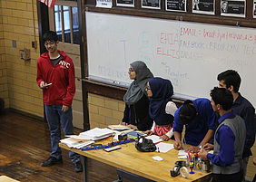
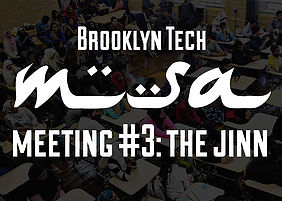
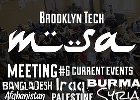
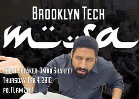
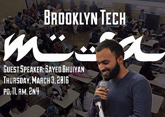

First MSA Meeting

Welcome to the first MSA meeting of the 2014-2015 year. Alhamdulillah what a great turnout with 100+ people. MSA is a place where anyone can come in and learn about Islam, we welcome you all!
Here's to a great year, a new beginning, new friends, expanding our Islamic knowledge, broadening our horizens, and building a stronger brotherhood and sisterhood.
2nd MSA Meeting: Icebreakers
What a great turnout for the second MSA meeting. We hope that this meeting was fun and provided an opportunity to get a feel of the community and family we have at Tech MSA.
The Jinn
Did you know before the prophet left he was asked when day of judgement would take place? "He replied I can't reveal the exact date but one thing I can tell us it'll definitely be after 1400 years." Go check the Islamic calender- the year 1437 just started. Our 1400 years garuntee is complete and so there is a possibility we will encounter anti-Christ or the dajal during our lifetime.
Dajjal

Trying to know the unknown has always been a favorite pastimes for us humans and the existence of a world parallel to our own has always fascinated people.
Join us tomorrow in the discussion of the jinn world, possession, black magic, and the telling of jinn stories.
Power of Dua

When life turns into a complication, sort it out with supplication. Just raise your hands and make dua.
Dua is the most excellent form of worship it is the weapon of the believer.
Eid Party Celebration
Eid Mubarak!
Hope you have an amazing Eid with your family and friends.
Join us at our Eid Party, it will be filled with great food, performances, and games. Bring food for the potluck. Come by room 5N4 to have a great night before the Winter Break.
Current Events
With so many things happening in the world today, it may be hard to keep track of ongoing conflicts around the world. To make us more aware of the world we are living in, we will be discussing current ongoing issues regarding the six countries you guys voted for: Palestine, Burma, Bangladesh, Syria, Iraq, and Afghanistan.
A Bowl of Milk
“If you are truly a seeker of knowledge, then you must be aware that nothing is achieved without sacrifice. Thus, if I am to teach you anything, you must first agree to engage yourself in some sort of service (khidmah).”
Join us in room 2N6 to participate in a really fun activity relating to this story and involving a bowl of milk and a lot of walking.
Respect for Parents
When asked about the people who taught us the most, who were there for us through our hardships, who laughed with us during the good times, who put up with us on our off days, most of us think immediately of our parents. However, just as many might be quick to say that they don't treat their parents with the respect they deserve.
First Speaker of the Year

Assalamualikum! Tech MSA is super excited to announce our first guest speaker for the year: Cyrus McGoldrick!
Cyrus McGoldrick is a Muslim community activist, artist and student, born in the U.S. of Irish and Iranian descent. He graduated with a B.A. in Middle Eastern, South Asian & African Studies from Columbia University in 2010, and worked for a number of Islamic social and human rights organizations.
Welcome Omar Shareef!
It's that time of year again for Omar Shareef (Omariachi Sheriff) to walk the halls of tech! We are super duper excited to have him come in for MSA this Thursday! It'll definitely be a meeting that you wouldn't want to miss. In case some of you guys don't know him, his bio might give you a little insight to who he is:
"Jokes so halal, they're ha-lol. Ba dum tish! .........................I'm sorry. I'll see myself out."
Practicing Good Manners
ARE YOU READY FOR THURSDAY?
Sayed Bhuiyan is the current regional coordinator for Muslim Aid America, he has a masters in public health from SUNY Downstate and is currently researching mental illness and its stigma in the American Muslim community. He is an avid spoken word performer and has been performing since high school.